Saunavuoro on pystyttävä varaamaan tietokoneella selainta käyttäen
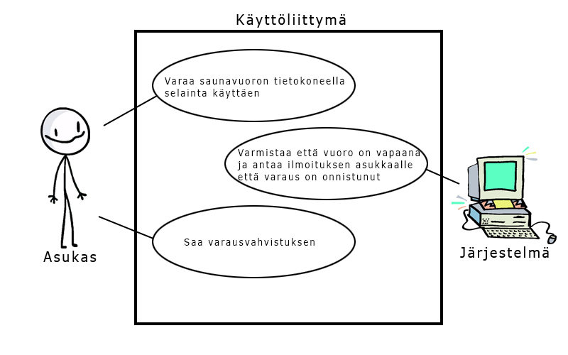Selainversion on skaalattava hyvin myös mobiililaitteille
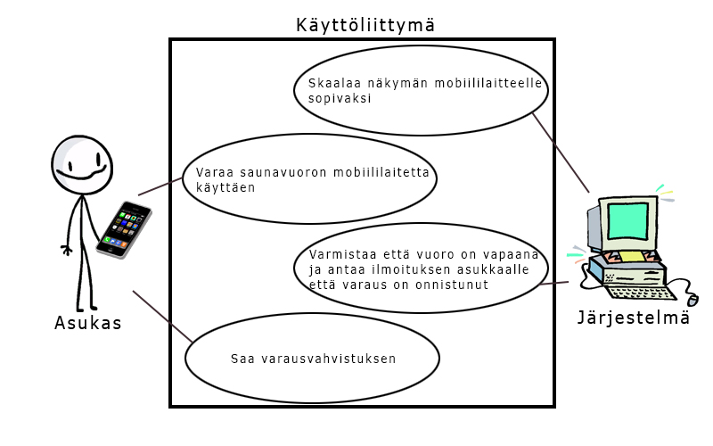Oma saunavuoro on tarvittaessa pystyttävä luovuttamaan muille palvelua käyttäen
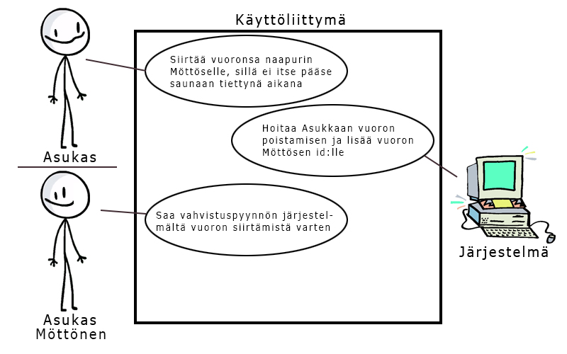Saunan varausjärjestelmän täytyy päivittyä reaaliaikaisesti
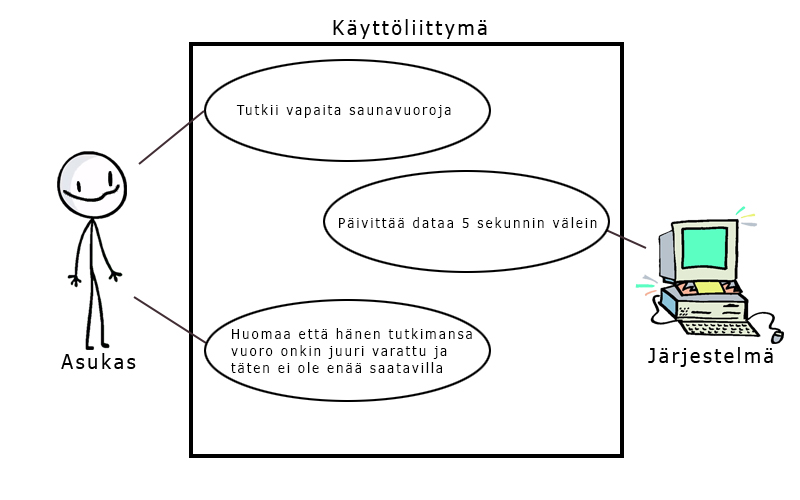Asukkaiden on nähtävä vapaana olevat saunavuorot palvelusta päiväkohtaisesti ja tunneittain, ns. kalenterinäkymänä"
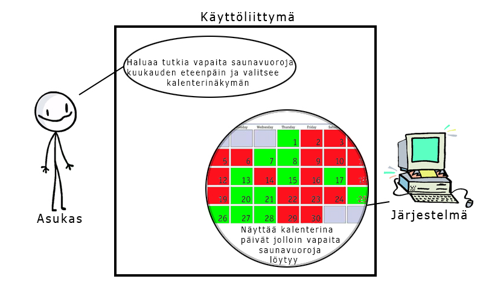Palvelusta on käytävä selkeästi ilmi tiedotteet käyttökatkoksista tai huolloista
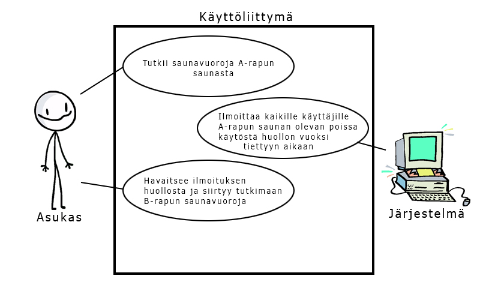Palvelussa on oltava näkymä, josta voi seurata saunaan liittyviä kuluja
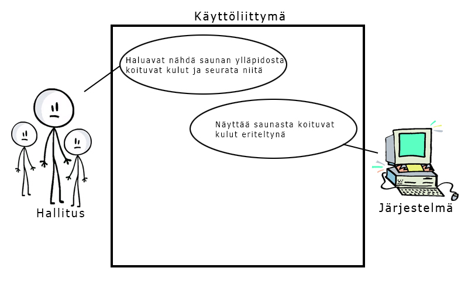Kuva järjestelmän sisältämästä tiedosta ja niiden yhteyksistä. Ei saa näyttää Bradelle. :)
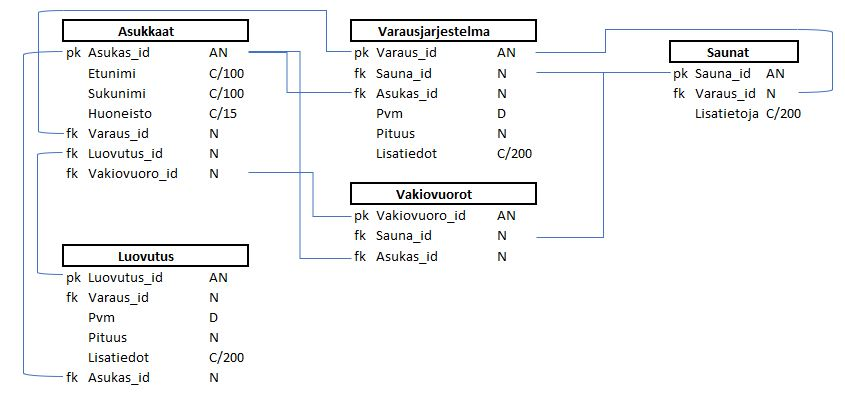Saunavuoro on pystyttävä varaamaan tietokoneella selainta käyttäen
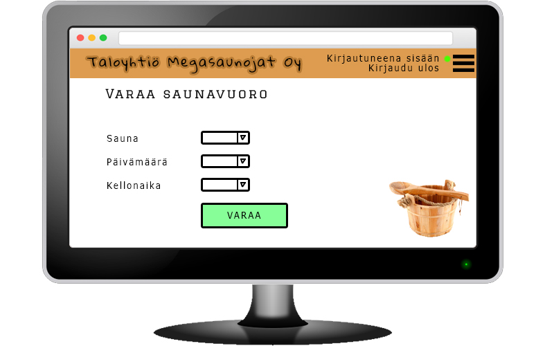Selainversion on skaalattava hyvin myös mobiililaitteille
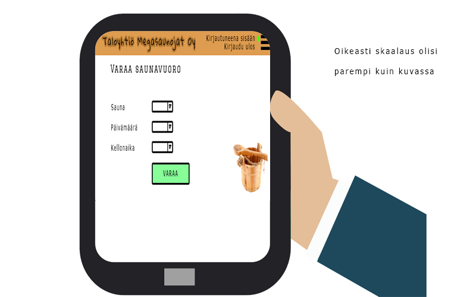Oma saunavuoro on tarvittaessa pystyttävä luovuttamaan muille palvelua käyttäen
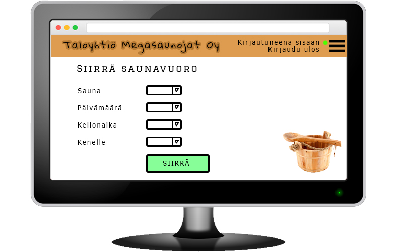Saunan varausjärjestelmän täytyy päivittyä reaaliaikaisesti
-Asukkaiden on nähtävä vapaana olevat saunavuorot palvelusta päiväkohtaisesti ja tunneittain, ns. kalenterinäkymänä"
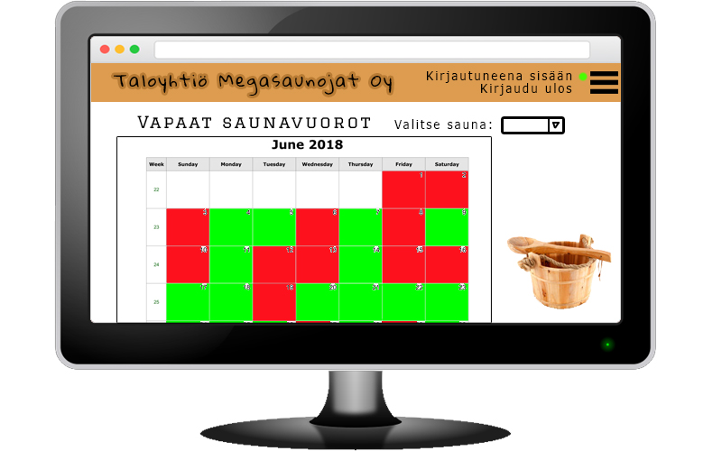Palvelusta on käytävä selkeästi ilmi tiedotteet käyttökatkoksista tai huolloista
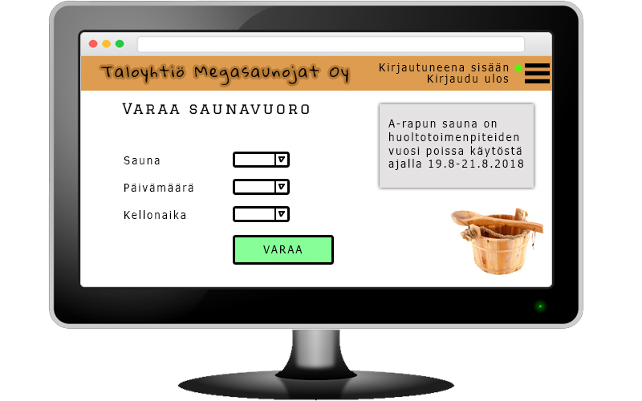Palvelussa on oltava näkymä, josta voi seurata saunaan liittyviä kuluja
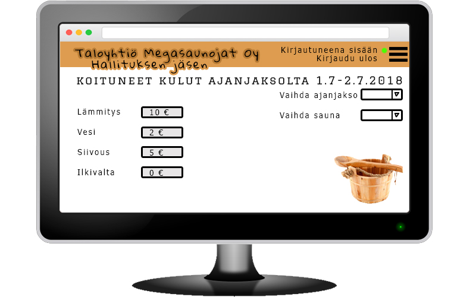